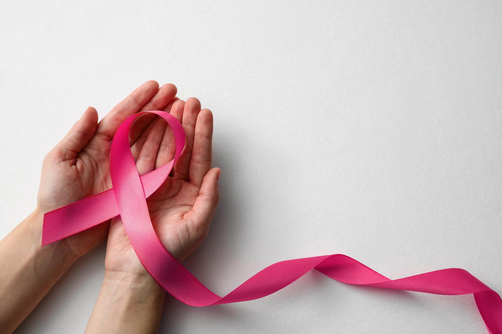

Outubro Rosa: prevenção e diagnóstico precoce do câncer de mama. O mês de Outubro já é conhecido mundialmente como um mês
marcado por ações afirmativas relacionadas à prevenção e diagnóstico precoce do câncer de mama.
O movimento, conhecido como Outubro Rosa, é celebrado anualmente desde os anos 90.
Outubro Rosa é um movimento internacional de conscientização para o controle do câncer de mama, criado no início da década de 1990 pela Fundação Susan G. Komen for the Cure.
ao máximo a campanha do Mês de Conscientização do Câncer de Mama deste ano.ndemia COVID-19, os grupos que atuam em câncer de mama tiveram que repensar suas campanhas do Outubro Rosa e aumentar sua presença virtual. Por meio de intervenções, campanhas e mensagens inovadoras, eles mostraram que a promoção da saúde pública pode assumirvárias formas e gerar um forte impacto no acesso à saúde. Qual a melhor forma de adaptar uma campanha? Por que a parceria com outros grupos pode aumentar o alcance das mensagens compartilhadas? Como avaliar o impacto de uma campanha virtual?
Para tentar responder essas questões, em 21/9/2021, a Union for International Cancer Control (UICC) compartilhou estudos de caso de diferentes grupos e
regiões para inspirar ideias e compartilhar lições aprendidas nas campanhas de 2020 para aproveitar
ao máximo a campanha do Mês de Conscientização do Câncer de Mama deste ano.
proteja quem voce ama
